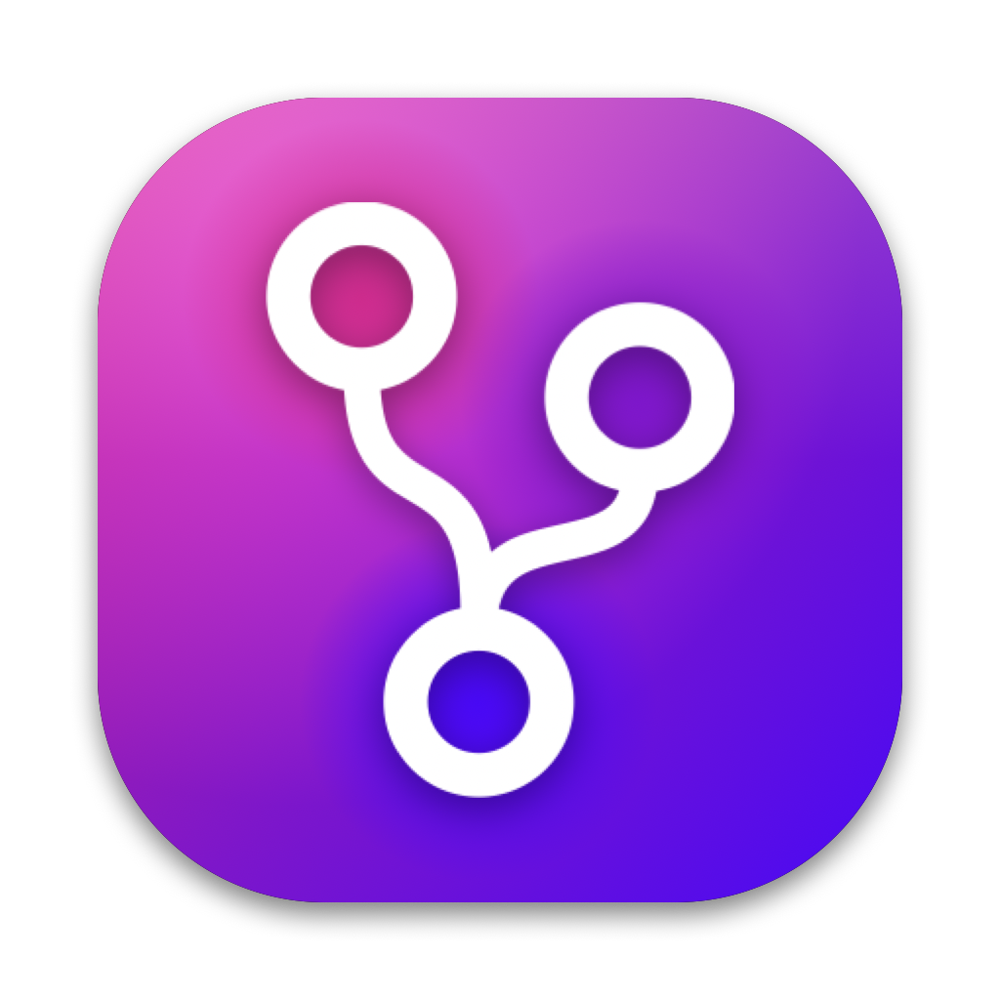
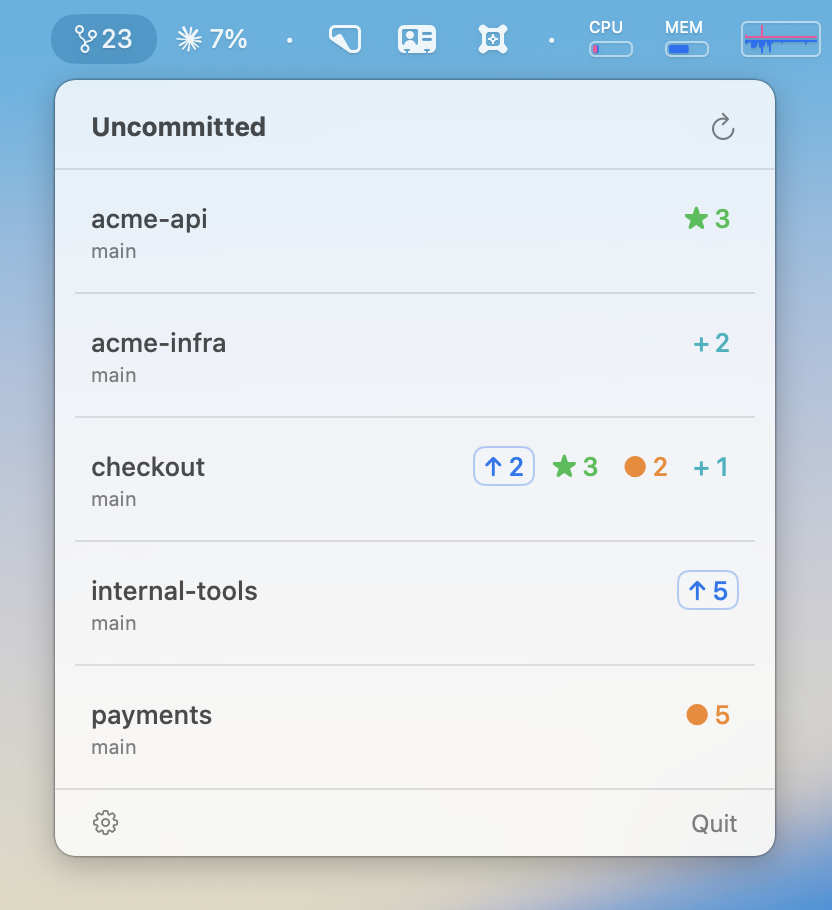
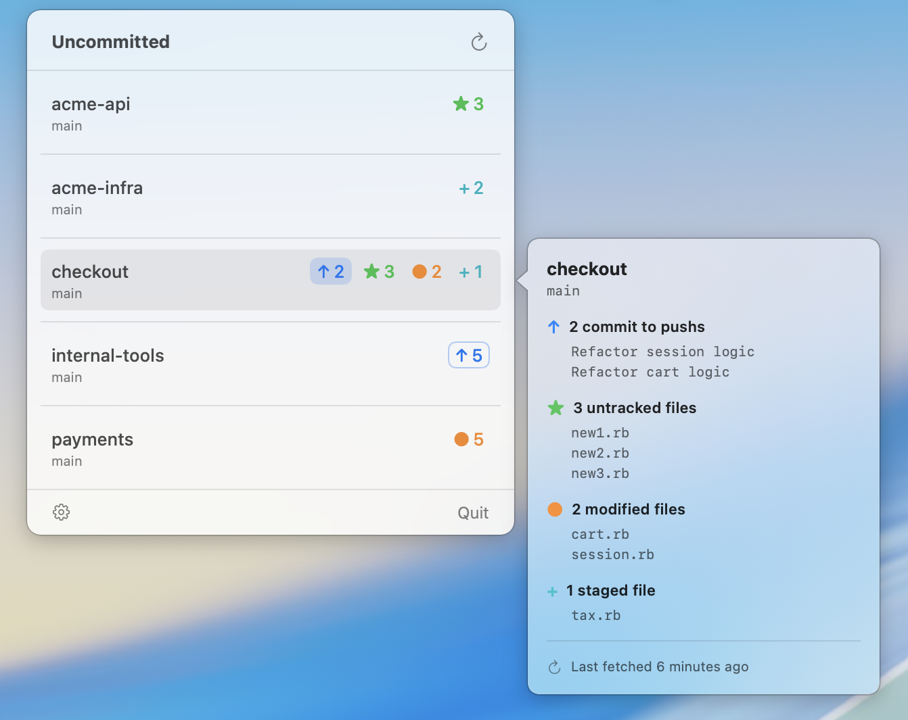

Every repo with uncommitted or unpushed work, one glance away in your macOS menu bar. Native, fast, always up to date.

A git-branch icon and a single number: how many repositories need your attention. Click for the full breakdown — never lose a stash, a forgotten commit, or an unpushed branch again.
A live FSEvents file-system watcher updates counts the moment something changes — no timer hammering your disk.
Untracked, modified and staged file counts, plus unpushed and unpulled commits — per repo, broken down by category.
Click the ↑ pill to git push, the ↓ pill to git pull --ff-only. Failures surface git's real error; nothing silent.
Optional per-repo GitHub status via the gh CLI. The menu-bar icon turns red when any tracked repo has failing CI.
Each repo row carries compact, colour-coded badges. The arrows are interactive; the rest are read-only counts.

Signed by Apple, no Gatekeeper warning or right-click workaround. Updates itself afterwards via a built-in Sparkle updater.
Uncommitted-X.Y.Z.zip.Uncommitted.app into ~/Applications.Want the detail? Full README · Release notes